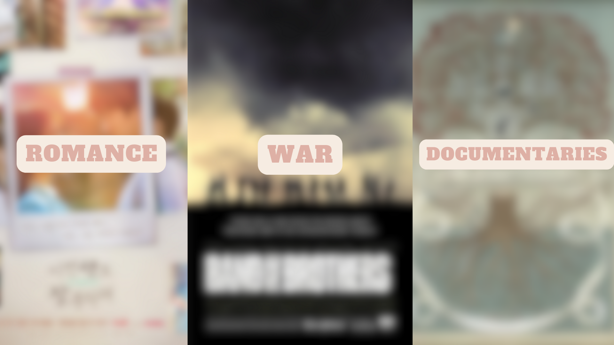
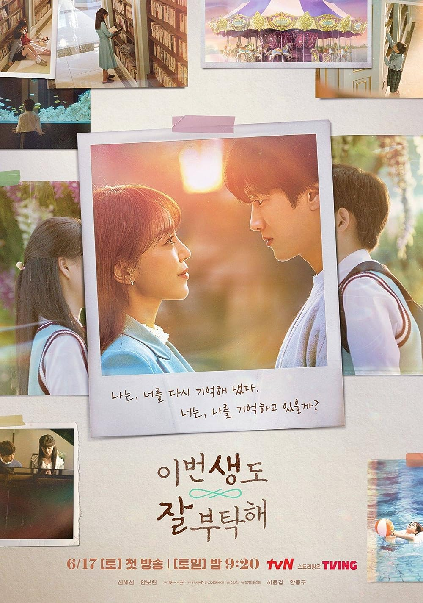
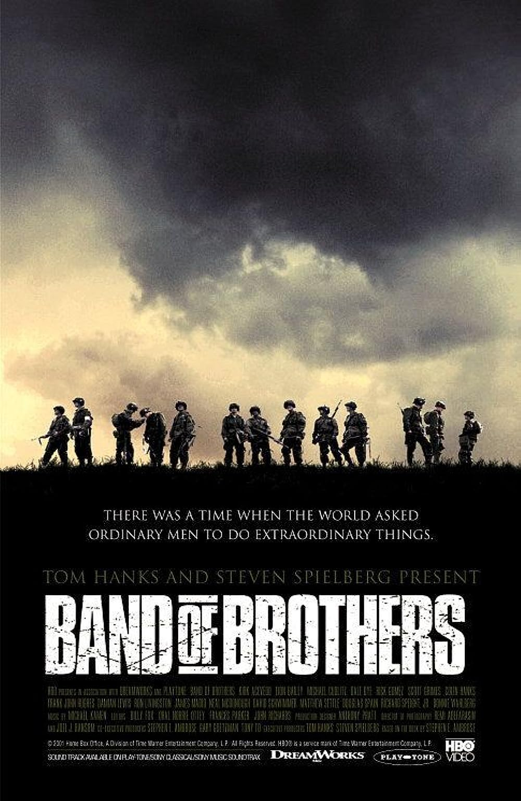
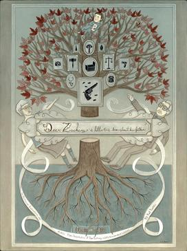

3 TV Genres and My Favourite TV Shows Of Each
THE GENRES
For this post I decided to showcase three shows that I have absolutely fallen in love with. However, to keep these recommendations varied I decided to make sure to give you shows in different genres they showcase. So hopefully depending on your favourite genre I can give you a show you’ll enjoy!
Romance
See you in my 19th life was a pleasant surprise watch during this summer. It may have been due to my extremely low expectations because I have been struggling finding a kdrama I genuinely enjoy. I have been watching k-dramas since 2017 and my biggest struggle is finding new, well-developed plots that keep me engaged. Before this kdrama I watched a couple of episodes of netflix’s highly popular romance drama “King The Land” airing at the same time and I did not find that enjoyable as I felt the show was just too stereotypically boring. I almost didn’t watch this kdrama thinking it is going to be the same-old romance plot. However, the best part of See you in my 19th life is its new but easily understandable plot. See you in my 19th life follows Ban Ji-eun, a woman that has lived for hundreds of years through her mysterious capability to reincarnate. She can remember all her past lives and struggles with her changes in races, gender and social class. In her eighteenth life, as a young korean girl she falls in love with a boy, however just as she promises to stay by his side, she is killed in a car accident. Now in her 19th life, Ji-eun makes it her goal to reunite with her now grown lover, without letting him know her true identity. I love this kdrama because all of the tropes within it I personally adore, as there is no-love triangle and secret identity. The topics in this kdrama are very emotional as it deals with tragic losses and trauma, however compared to other dramas, I truly believe that they showcase realistic interpretations to dealing with these struggles. If any of these tropes and plots sound interesting I highly suggest checking this 12-episode drama on Netflix.
War
Band of Brothers is a legendary tv show with extremely high ratings and praises although it has been over twenty years since its debut. With all of its praises I had high expectations going into this show especially since I had never watched a war based show before, but it surpassed all my expectations. Band of brothers is an HBO miniseries dramatising the story “Easy company” United States Army's 101st Airborne Division during World War II. Starting with parachute training at Camp Toccoa, Georgia, "Band of Brothers" traces the unit's path through the American airborne landings in Normandy, Operation Market Garden, the Siege of Bastogne, the invasion of Germany, including the liberation of a concentration camp, and finally, to the war's conclusion. I feel the best aspect of this fantastic show is the focus on platonic love and brotherhood within this company. Each episode starts with real members of the company relaying their own experience, and adds a deeply personal and authentic touch to the narrative. Band of Brothers is considered one of the most accurate war shows to date, as both the directing staff and actors took great care in making sure the depiction of the individuals and events were relayed as truthfully as possible. Although a miniseries, the show has the ability to make their audiences attached to these characters and a lot more empathetic and knowledgeable regarding the event of WW2. The show does cover heavy material and does show a lot of blood, violence, and sombre events however, the show managed to balance the darkness with some few rare but golden moments of humour and love that were very nice. Band of brothers is a legendary show, however I feel that not many individuals my age have found this gem, hence I hope I have convinced you to pick up this show about such an important time in history.
Documentary
Dear Zachary, honestly was both surprising in that I even discovered it but also by how much I was immersed in it. I found this hidden gem, which apparently is very well loved within the documentary fanspace, by scrolling through an article titled “Documentaries with real life plot-twists” and that description is 100% accurate. Dear Zachary was 100% made by Kurt Kunnene whose best friend Dr. Andrew Bagby tragically died by murder before he even knew his wife was pregnant. Said wife, Shirley Turner was the main suspect for the murder and fled to Canada to escape prosecution. Andrew’s parents then have to fight for custody of their grandchild with the individual who murdered their son. Dear Zachary highlights the flawed legal system in Canada and the creation of the Canadian bill C-464. The film was made to bring more awareness towards the consequences of not protecting children within legal battles. I highly suggest watching this film without any research of the case as going into it blind is the reason why it is considered a documentary with a plot-twist. By the end you’ll feel a huge feeling of disappointment and frustration regarding how the Bagby family was treated. Its a heart-wrenching reminder of the lengths humans will go when it comes to someone they love but also the grief and sorrow we experience because of that love.
Feedback
If you have watched any of the shows I wrote about, please give me your feedback! I would love to your thoughts!